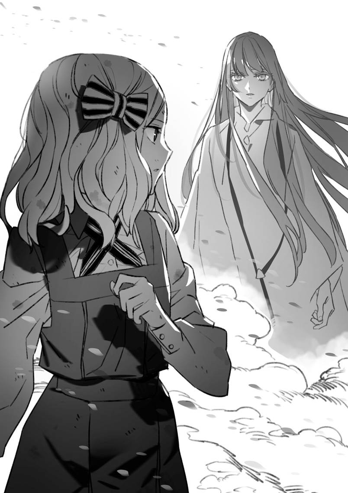

É verdade que, num passado distante, aquele artefato foi um ser vivo dotado de consciência.
No entanto, no instante de seu nascimento, o artefato não possuía memórias anteriores. Apesar disso, entendia vagamente o que o levara a adquirir senciência. Nascera, ganhara forma viva, porque era isso que os outros desejavam. No começo, era apenas um aglomerado de Energia Mágica. Uma existência semelhante a uma gota transbordando da tigela que é o mundo.
Um aglomerado natural de Energia Mágica, praticamente um realizador de desejos simplificado de uma era em que a Energia Mágica era mais abundante.
Acreditava que alguém desejara que ele fosse um ser vivo, mas não podia ter certeza. De todo modo, essas memórias de dias distantes já haviam ficado muito para trás. Mais tarde, o artefato participou de incontáveis disputas por sua posse. Foi morto vez após vez, e, a cada vez, voltava a ser um aglomerado de energia, nascia de novo, era derretido, nascia de novo, era esmagado, nascia de novo, era despedaçado, nascia de novo... até perder a capacidade de se importar com sua forma física.
Não muito depois, enquanto o artefato assumia uma aparência humanoide, seis humanos diligentes o retalharam em pedaços.
Ele não sentiu malícia neles. Cada um fizera aquilo em nome de um objetivo puro, nunca para atormentar o artefato. Pela pesquisa. Pela paz. Pelo futuro. Pela magia. Para salvar o mundo. Por outra pessoa. Mas isso não mudava o fato de que o artefato estava sofrendo. Muito, muito tempo depois, quando seu corpo foi dividido em seis partes, uma tragédia o salvou. Uma potência arcana - a última dos dragões - abriu um buraco na Terra numa tentativa de atravessar para o Mar Interior do Planeta, onde a fantasia ainda permanece... O dragão marchou para a própria morte, como já esperava em parte, e o dano colateral incluiu os seis humanos e o artefato que mantinham consigo.
Ou talvez aquela tenha sido a tentativa deles de pegar carona até o Mar Interior do Planeta. Talvez tenham tentado interferir de algum modo. O artefato fragmentado já não tinha meios de compreender seus motivos ou métodos com precisão... A única opção que lhe restava era manter um registro constante e minimalista da situação ao redor.
Seis humanos morreram. Esse foi o único fato registrado.
Seu sofrimento lhe foi transmitido. Sua resignação lhe foi transmitida. Seu arrependimento lhe foi transmitido.
Se o artefato fosse humano, talvez pudesse ter rido do fim de seus atormentadores. Mas, fragmentado, ele já não era uma forma de vida normal. Tornara-se incapaz de pensar.
E assim o tempo passou. Tempo suficiente para que o planeta perdesse a maior parte de sua natureza arcana.
Sob a terra escura, o artefato transformou-se numa relíquia representando a fantasia antiga. Ninguém sabia que tipo de entidade ele havia sido. Ninguém tentava descobrir. Não havia necessidade. Ou, pelo menos, era isso que pensavam os mineradores que o desenterraram. Tudo o que importava eram os resultados que a relíquia podia produzir. Era de se esperar que magos valorizassem aprender a origem das coisas, mas os efeitos que aquele artefato era capaz de produzir atingiam o coração e o orgulho dos mineradores com violência.
O artefato transbordando densa Energia Mágica bastava para enlouquecer um mago comum de desejo.
Na terra em que foi desenterrado, chamada Túmulo Espiritual de Albion, os magos lutaram ferozmente entre si pela posse do prêmio... até que o chefe do Departamento de Mineralogia, um ancestral dos El-Melloi, encerrasse todas as disputas com uma combinação de força e habilidade política.
Era um Espírito Natural, uma fada, uma besta mística ou um animal comum dotado de algum poder singular, como Olhos Místicos?
O então chefe dos El-Melloi percebeu que os seis fragmentos extraídos de setores diferentes pertenciam à mesma criatura fantástica.
Uma cabeça, um torso e dois pares de braços e pernas. Um Fantasmal não perfeitamente humanoide, mas próximo o bastante na aparência. Fora dividido de maneira tosca, mas os magos presumivelmente da Era dos Deuses, ou de alguma era análoga, o haviam repartido para extrair significado de cada parte individual.
Uma coisa que o primeiro El-Melloi nunca descobriu foi por que ele acabara enterrado no Túmulo Espiritual de Albion.
Meluastea talvez tivesse conseguido descobrir mais, mas o então chefe dos El-Melloi era rígido demais em sua forma de pensar para cogitar pedir ajuda a terceiros.
Com mais estudos e pesquisas, o então Lord de Mineralogia descobriu o método mais eficiente de produzir Energia Mágica: transformar em Artefato Místico Supremo as três "pedras" que ele supunha corresponderem ao coração, à carne e às asas da criatura.
O então Lord compreendia melhor o que estava fazendo. Reunir todas as partes num todo só geraria novos picos, ainda maiores, de Energia Mágica. Talvez até um estado completo. Mas, julgando que isso arruinaria a perfeição do objeto como Artefato Místico, ele passou adiante apenas três fragmentos a seus sucessores, ensinando que aquele era seu estado supremo.
Nada mudou até a Quarta Guerra do Santo Graal.
Aproveitando o pânico de um hotel em colapso em Fuyuki, ladrões roubaram o núcleo composto por três fornalhas de Energia Mágica das mãos do então Lord de Mineralogia, Kayneth El-Melloi Archibald.
O casal de magos que o obteve tinha uma única pergunta em mente.
"Se os El-Melloi tinham algo tão extraordinário assim, por que não permitiram que as peças se fundissem numa só? Por que não o colocaram para funcionar de novo?"
"Por que não o trouxeram de volta à vida? Nós podemos fazer isso. Talvez eles não pudessem, meu bem, mas nós podemos. Podemos fazer esse arcanum nascer de novo no mundo."
A dúvida deles se converteu num choque poderoso, levando-os a acreditar com arrogância que possuíam todas as ferramentas necessárias.
Em seu laboratório secreto em Kurokizaka, exploraram a veia dracônica de Fuyuki, que ainda não havia se recuperado do tumulto.
O casal jamais foi condenado por seus atos, porque o sacerdote da Santa Igreja que atuava como Segundo Proprietário interino da terra ou não os percebeu, ou escolheu ignorá-los.
E o tempo voltou a passar... Com tempo suficiente, os magos casados provaram que podiam sustentar a própria arrogância.
Ao mesmo tempo, provaram outra coisa: que todos os sucessores dos El-Melloi estavam certos em concluir que as peças daquele artefato não deviam ser reunidas.
Cidade de Fuyuki, a terra do Oriente que servia de placa de circuito para um ritual de grande escala: a Guerra do Santo Graal.
Shinto, Kurokizaka, quarteirão 4, Apartamentos Semina, 11º andar, apartamento 2. Foi ali que ocorreu o renascimento mais recente dela, do artefato. Mas não foi ali que ela passou a maior parte do tempo. O edifício em L só comportava dois apartamentos por andar. Ela ficava confinada no apartamento 1, o único vizinho do 11º andar.
O apartamento 1 era um pequeno laboratório improvisado por um casal de magos. Na Quarta Guerra do Santo Graal, eles obtiveram o Artefato Místico Supremo da família El-Melloi.
Para colher os frutos de sua pesquisa, compraram um apartamento no edifício Semina, que recebia vazamentos de Energia Mágica da veia dracônica.
Depois de quase dez anos de pesquisa, o casal enfim fundiu de volta num só os três reatores de Energia Mágica.
O casal esperava que o reator unificado fosse literalmente um coração de dragão. Embora não ambicionassem algo comparável ao coração de Albion, acreditavam que obteriam algo vindo de uma era igualmente fantástica.
No entanto... o que nasceu foi algo parecido com um feto humano.
Mais tempo se passou, e o casal começou a disfarçar o artefato como se fosse sua filha. Nesse ponto, o artefato - uma fornalha mágica na forma de uma menina - ainda não recuperara as lembranças de suas vidas passadas.
Passava os dias simplesmente obedecendo ao que seus pais mandavam e participando de ritual após ritual para extrair dela Energia Mágica.
O casal deixou de perceber uma coisa: estava sob a influência da menina, e aquilo começava a alterar suas mentes. Ela se originara como um aglomerado de Energia Mágica derramado do mundo. Moldada numa forma fantástica em resposta a um desejo. Pode perder a memória, mas não pode perder essa propriedade. Por isso, o nexo se inverte. Manter o artefato junto de si compele alguém a desejar.
Ela amplifica o desejo mais profundo da pessoa e a empurra rumo a ele. Afinal, seu corpo é praticamente uma linha ley viva, gerando quantidades imensas de energia. Normalmente, algo como ela só precisaria permanecer parado para que magos próximos o detectassem, mas ela fazia toda aquela Energia Mágica circular dentro de si, sem deixar nada escapar para fora.
Como essa criatura era capaz de alimentar sozinha uma magia avançada a ponto de quase ser Magia, quando colocada nas mãos de um mago ela servia como um realizador de desejos modesto (em comparação com o Graal Maior de Fuyuki), mas altamente reutilizável.
Quem seria capaz de conter a própria cobiça se tivesse um cofre que imprimisse maços de dinheiro infinitamente? Ela era uma fonte de Energia Mágica, algo que os magos consideram muito mais valioso do que qualquer quantia em dinheiro jamais poderia ser.
Assim, ela deformou o casal de magos. Mesmo sem qualquer influência externa, já eram o tipo de gente que roubaria Artefatos Místicos dos El-Melloi. Nunca tiveram a menor chance de manter a ganância sob controle.
Aos poucos, começaram a agir contra seus próprios princípios, o que resultou em brigas violentas e cada vez mais frequentes entre os dois.
Um apego poderoso os impedia de largar o artefato, e uma rejeição igualmente poderosa, recheada de medo e raiva, se voltava contra ele.
Um desejo num dia e, no seguinte, outro desejo que o contradizia. Assim, entraram num ciclo. Quando era rejeitada, ela saía para conceder o desejo deles e retornava ao apartamento quando voltavam à fase do apego.
Nas fases de rejeição, o artefato sempre aceitava a violência física deles ou suas tentativas de queimá-la com utensílios mágicos, porque esse era o desejo deles.
Perder o movimento dos braços não era grande coisa, já que depois aquilo se curaria quando desejassem sua recuperação completa.
Dito isso, como ela jamais realizaria os próprios desejos, houve vezes em que precisou contar com outras pessoas.
"Você pode... apertar o botão?"
Às vezes, ela tinha contato com a pessoa que foi morar no apartamento ao lado, no mesmo andar.
O artefato pedia só o mínimo, porque o desejo daquela pessoa era a solidão. Apesar de rejeitá-la, a jovem ainda atendia seus pedidos. Para uma realizadora de desejos, ter os próprios desejos atendidos por outra pessoa era algo intrigante, agradável. E a menina, sentindo coisas que jamais sentira antes, passou a aguardar em segredo as próximas oportunidades de subir no elevador junto daquela universitária.
Mas esses dias não duraram muito. As circunstâncias ao redor dela chegaram ao inevitável ponto de ruptura. O artefato estava perplexo com o estado da insanidade crescente daqueles magos. Os magos antigos presentes em suas memórias de vidas passadas jamais haviam chegado tão longe quanto aqueles dois. Os magos da Era dos Deuses trabalhavam com afinco sem se viciar em seu poder mágico, e cada chefe dos El-Melloi julgara que usá-la como uma trindade de amplificadores inorgânicos de Energia Mágica - sem necessidade de correr o risco de lhe dar vida e permitir que desenvolvesse um ego - era a maneira suprema de empregá-la. Por isso, a influência que sofriam não era tão grande.
A relíquia da Era dos Deuses amplificava a ganância dos que estavam ao redor. Magos medíocres e sem história suficiente jamais teriam chance de levar adiante sua pesquisa se precisassem resistir a isso.
O casal de magos continuou perdendo a racionalidade cada vez mais...
E, um dia, tudo desabou.
O artefato só estava tentando realizar os desejos do casal. Nada além disso. Para tanto, reconstruiu de leve o próprio corpo. As unhas de suas mãos se deformaram em lâminas carregadas de maldição e se desprenderam de seus dedos. Prisioneiro de sua loucura e de seu ódio mútuo, o casal se encantou com a beleza das lâminas criadas pelo artefato e passou a lutar por elas...
O fim de sua autodestruição foi anticlimático.
Alguns minutos depois daquele anticlimático fim autodestrutivo.
Para os fins deste relato, chamaremos de "A" a universitária que atendeu à batida do artefato na porta.
A não entendeu por quê. Mas, no instante em que teve certeza de que era a garota do capuz vermelho batendo à porta, levantou-se da cadeira e correu pelo corredor longo e escuro sem hesitar.
E, ao abrir a porta da entrada...
A a viu. A menininha ferida, sem o capuz. E, junto com isso, veio uma percepção imediata. O capuz, que a universitária sempre presumira servir para esconder sinais de abuso no rosto, na verdade escondia outra coisa.
Sem que A soubesse, o capuz mágico tinha um efeito de ocultação: disfarçava o cabelo e as orelhas da menina, fazendo-os parecer cabelos pretos como os de seus pais e orelhas redondas comuns.
Agora, sem o capuz e sem seu efeito, a garota ensanguentada não parecia exatamente humana, ao menos não do jeito que A entendia humanidade.
Chamavam a atenção as orelhas finas e pontudas sobressaindo do cabelo. Seus cabelos tinham a cor de um ouro transparente, completamente diferente dos de seus pais, sem qualquer sinal de tintura ou descoloração.
"Uma elfa...?"
Ela não era uma mulher adulta como as elfas que costumam aparecer nas histórias, mas algo comparável. Ainda assim, a primeira palavra a escapar da boca de A ao ver aquela menina delicada foi "elfa". Uma aparência bizarra e um cheiro nauseante de sangue. Uma anormalidade evidente. Uma situação capaz de fazer qualquer pessoa comum gritar. Mas tudo o que A fez foi tentar avaliar a cena. As roupas e a boca deixavam claro que era a garota com quem A sempre dividia o elevador. Assim que confirmou isso, uma voz ecoou dentro de sua cabeça.
"Por favor, cuide desta menina."
Uma garota de óculos que A só tinha visto uma vez no elevador. Aquela que invadira a mente da jovem solitária e voltava toda vez que A olhava para aquela garota.
"Não estou pedindo para você arriscar a própria vida."
Os olhos de A ficaram presos na garota imóvel, salpicada de sangue.
"Eu só quero que você... estenda a mão para ela se alguma coisa acontecer. É só isso que peço."
"O quê..."
Antes mesmo de formar um quadro claro da situação, A já estava falando. Apesar da aparência alarmante da menina, A se agachou para ficar na altura dos seus olhos antes de fazer perguntas.
"O que... aconteceu?"
As palavras saíram acompanhadas de um grande engolir em seco e mãos suadas. Em contraste, a resposta da menina foi inesperadamente indiferente.
"Mamãe... e... papai... morreram."
A universitária não confiou nessas palavras. A expressão indiferente da menina não combinava com o peso do que dizia. Mas a prova estava no cheiro de sangue que vinha dela. Mesmo com a resposta sendo enfiada à força goela abaixo, A ainda exigiu confirmação.
"Eles... morreram?"
"Eles... brigaram... por minha causa.", a menina assentiu.
Mesmo assim, ainda não fazia sentido. Havia dias que A ouvia as brigas acaloradas vindo do apartamento. Não eram pais abusivos? Por que brigariam por causa dela? As perguntas só aumentavam. O senso comum dizia que o melhor era chamar a polícia e uma ambulância imediatamente. Mas aquela menina não pertencia em nada ao senso comum. Era a situação em que o vizinho deveria chamar a polícia e nunca mais ouvir falar daquilo, só que agora, com o cabelo e as orelhas da garota mudados, A não conseguia imaginar como ela seria tratada.
Ainda assim... quais são as minhas outras opções? Depois de um debate interno, A decidiu voltar para dentro para pegar o telefone e avisar a polícia.
Mas, ao tentar virar as costas para a menina, as palavras da garota de óculos voltaram a ecoar em sua cabeça.
"Eu só quero que você... estenda a mão para ela se alguma coisa acontecer. É só isso que peço."
"Não estou pedindo para você arriscar a própria vida."
"estenda a mão" "estenda a mão" "para ela"
As palavras da garota de óculos ecoaram. Por algum motivo, A nunca conseguiu esquecer sua voz, apesar de tê-la ouvido uma única vez. A hipnose sacudiu seu cérebro com uma intensidade mais parecida com uma maldição.
Originalmente, aquela hipnose não era um feitiço mal-intencionado. Para a maga Sajou Ayaka, aquilo fora apenas uma espécie de seguro.
É impossível saber se seus olhos perceberam o significado mágico da menina, já que sua Energia Mágica estava perfeitamente contida. Ainda assim... aquela menina deixou Ayaka inquieta... tomada por um mau pressentimento, Ayaka decidiu num impulso lançar um leve feitiço de hipnose numa jovem próxima, encorajando-a a não abandonar a garota caso alguma coisa acontecesse.
"Entre... Agora, você devia tomar um banho quente."
"Tem certeza...?", perguntou a menina confusa diante da mão estendida de A.
Ela era mais calma do que qualquer criança de três ou quatro anos deveria ser, mas, em vez de desconfiar disso, A a convidou para entrar.
E então, depois de lavar o sangue, a menina foi levada ao quarto de A. Ela não demonstrou emoção alguma enquanto seguia a vizinha, mas, ao entrar no cômodo, finalmente fez uma expressão perplexa.
"O que é isso?"
"Ah, isso?", reagiu A ao ver a pequena olhando para a parede do quarto, com um sorriso constrangido.
O quarto de A tinha um grande retrato na parede. A semelhança de uma colegial de óculos desenhada a lápis, lápis de cor e tinta aquarela.
"É alguém especial para mim."
Ao lado do retrato, havia o que pareciam ser capturas de tela impressas das câmeras de segurança do prédio, mostrando a menina no elevador.
De quando ela dividiu o elevador com A e com a Chapeuzinho Vermelho. A menina fitou a parede, incapaz de entender o significado daquilo. O tom da voz de A sugeria que a universitária não entendia muito mais do que ela.
"Só que eu nem sei o nome dela."
A maga que a hipnotizou no elevador cometeu um único erro. O único cálculo errado de Sajou Ayaka foi... A, o alvo totalmente hipnotizado, amava a solidão demais. A universitária havia pensado incontáveis vezes na morte ao imaginar que a sociedade não lhe permitiria conservar aquela solidão para sempre.
Foi isso que fez brotar uma contradição dentro de A. Por que alguém que amava tanto a solidão precisava cuidar da Chapeuzinho Vermelho, a filha de outra pessoa?
Sem qualquer conhecimento de magia, a jovem nunca parou de buscar um motivo para aquela hipnose ser tão arrebatadora. A estava desesperada para encontrar uma razão para ser incapaz de resistir ao próprio coração. E então chegou a uma conclusão. A única justificativa capaz de convencê-la era...
Estou apaixonada.
Foi amor à primeira vista pela estranha garota de óculos.
A solidão se torna mais tóxica ao consumir inúmeras outras emoções e, sob o efeito desse veneno, a universitária implorou para que aquilo fosse amor romântico, em vez de ter de admitir a própria loucura.
A universitária hesitou em falar com ela, com medo do que os outros pensariam, considerando que a garota provavelmente era pelo menos dois ou três anos mais nova.
A também sabia que invadir a sala do supervisor para roubar imagens das câmeras era sinal de uma obsessão anormal.
Mas a maior preocupação era o paradoxo provocado pelo fato de esse novo sentimento não ter mudado em nada sua essência amante da solidão.
"A moça... daquele dia...", sussurrou o artefato ao ver a grande quantidade de desenhos e fotos impressas.
O artefato - a garota do capuz vermelho - não pensou nada demais disso. Não entendia a humanidade o bastante para perceber que A estava a caminho de um colapso. Sua única impressão foi que o que A desejava estava escancarado.
O artefato simplesmente foi alterando o próprio corpo, pouco a pouco, para se adequar ao desejo da vizinha. Como faria qualquer vida nascida de um aglomerado de Energia Mágica para realizar o desejo de alguém.
Um mês depois do impossível assassinato-suicídio dos Apartamentos Semina. O caso que espantara os cidadãos foi encoberto por outros incidentes igualmente inexplicáveis que passaram a acontecer em Fuyuki.
Foi por isso que o desaparecimento da universitária que morava ao lado do casal não causou grande comoção, sendo lembrado, quando muito, como uma curiosa história de fantasmas temperada com lenda urbana.
Ninguém voltou a ver a universitária desaparecida depois disso. Pouquíssimas pessoas viram A no mês que antecedeu o sumiço, e nenhuma delas via a desaparecida no dia a dia.
Com uma exceção. A Chapeuzinho Vermelho que começou a viver no antigo apartamento da vizinha.
No processo de aprender toda sorte de coisas com a universitária, a Chapeuzinho Vermelho compreendeu algo que antes não podia entender.
Que a culpa pela morte do casal de magos que servia de seus pais de mentira era sua. Que ela amplificava a ganância dos outros. Percebeu isso pela razão mais simples possível. Porque a universitária A caiu vítima de seu poder.
O paradoxo avassalador entre querer ficar sozinha e querer ver realizado um amor romântico.
Incapaz de suportar o conflito entre desejos, A acabou chegando a uma última conclusão.
"Eu devia me tornar a garota de óculos."
A estava presa numa loucura inevitável. Mas nem isso impediu a lunática de estender a mão para a garota do capuz vermelho.
"Não tem mais jeito para mim. Ainda assim, não acho que você conseguiria sobreviver sozinha."
A garota do capuz vermelho, de origem singular, estava definhando. Fora o procedimento idealizado pelo casal de magos que a mantivera viva. Agora que eles estavam mortos, ela perderia a vida e voltaria a ser uma simples fornalha de Energia Mágica.
Sua humanidade era precária. Não, "ela" sabia de uma solução. Do mesmo modo, A sentia que aquela era a resposta. Então sugeriu. A universitária emaciada aproximou-se da garota do capuz vermelho, ainda mais emaciada, e expressou um desejo. Mais puro e mais ganancioso do que o de qualquer outra pessoa. O truque simples para realizar ao mesmo tempo o desejo de romance e o desejo de solidão.
"Então tenho uma ideia. Eu vou te dar tudo de mim. Meu conhecimento, meu passado, meu corpo, minha vida e meu futuro."
Depois de dizer isso, A - a universitária - acariciou a bochecha da Chapeuzinho Vermelho. Ela ainda tinha o físico de uma criança e o cabelo ainda era de ouro transparente, mas seu rosto lembrava fortemente o da garota de óculos que tinham encontrado no elevador. Com um olhar amoroso, A pôs um par de óculos na Chapeuzinho Vermelho.
Ela havia procurado em várias lojas até conseguir o mesmo modelo de óculos da garota da mochila grande.
"No começo foi muito estranho, mas agora não é mais. Eu sei que você consegue."
O corpo de A estava completamente definhado, talvez como sinal de sua loucura, talvez como consequência de uma pessoa comum viver com a garota do capuz vermelho, que não era humana.
"Não se preocupe comigo. Com ou sem você, eu nunca conseguiria acertar essa coisa toda de 'viver'. Se nada disso tivesse acontecido... se eu não tivesse conhecido você e a garota de óculos, tudo terminaria do mesmo jeito. A culpa não é dela nem sua."
A Chapeuzinho Vermelho - o artefato - respondeu àquele desejo puro e intenso. Fios de luz se estenderam a partir do artefato, envolvendo a si mesma e o corpo de A. Era um enorme casulo de luz. Sabendo que aquilo a isolaria completamente do mundo exterior, A abraçou o artefato como um pai abraçaria um filho e expressou seu desejo com uma alegria genuína na voz.
Num sonho
Sua consciência estava a um passo de despertar. Ayaka Sajou percebeu que andava sem parar por um mundo indefinido dentro de seu sono.
"Eu... estou..."
Conforme seus pensamentos se tornavam mais claros, veio a sensação de estar num sonho lúcido. E uma coisa chamou sua atenção: o lugar que ela presumira ser uma névoa profunda se estendendo para sempre era, na verdade, um elevador menor que 2 x 2 m.
"..."
Mas Ayaka não entrou em pânico.
Porque agora ela sabia de tudo. Tinha plena consciência de quem era. Encontrou um grande espelho atrás de si. Um espelho perfeitamente comum, instalado no elevador. Ainda assim, o espelho não mostrava a Ayaka atual. Mostrava uma figura muito mais familiar. Uma pequena silhueta usando um capuz vermelho. Ela mesma, vestida com o vermelho dos respingos de sangue.
"Eu era a Chapeuzinho Vermelho..."
Ayaka caiu de joelhos. Em silêncio, recordou o passado. As lembranças remotas de ser retalhada pelos humanos da antiguidade já não importavam. Tudo o que conseguia lembrar era da figura de sua gentil vizinha. A pessoa que estendeu a mão para ela, que nem sequer podia ser considerada um indivíduo - um ser capaz apenas de fazer mal às pessoas ao concretizar desejos impensados.
Eu a matei. Fui eu que causei a morte dela. Roubei tudo o que ela tinha. Não a devorei como um monstro faria. Tudo o que fiz naquele casulo foi absorver por inteiro seu corpo e suas memórias. Quando saí de lá, eu era uma quimera distorcida com o conhecimento da universitária e a aparência da garota por quem ela estava apaixonada.
Ela perdeu a vida, as memórias, o passado e o futuro. Só porque teve o azar de interagir comigo.
E adquirir o conhecimento de uma universitária que vivera uma vida comum foi minha ruína. Adquirir uma moral humana comum foi minha ruína. Isso me fez perceber coisas que eu nunca devia ter sabido. O quão repulsivo era o monstro que eu realmente era. E que eu era a culpada por aquela gentil vizinha, que estendeu a mão para mim, ter perdido tudo o que possuía.
Depois de passar algum tempo chorando e gritando de maneira transtornada... ela saiu silenciosamente do apartamento. A única coisa que sabia sobre si mesma era o caráter repulsivo de seu pecado.
Saiu andando, sem qualquer pensamento além de não suportar continuar ali. Tentou fugir. Tentou deixar tudo para trás.
E foi assim que chegou até aqui. Um elevador fictício criado dentro de um sonho. De joelhos no chão, ela despejou maldições contra as sombras de si mesma que havia visto antes.
"Por que você me encorajou...?"
A sombra da Chapeuzinho Vermelho surgira na escadaria do prédio no instante anterior à decisão de tornar-se a Mestra de Saber.
Sem dúvida alguma, ela lhe desejara boa sorte. Aquela era uma imagem vazia de mim mesma presa ao espelho do elevador, projetada por minha culpa... Se criei uma nova sombra só para validar a mim mesma, então sou mesmo uma egomaníaca, pensou Ayaka, amaldiçoando sua recusa primordial em morrer.
"Eu realmente devia ter morrido em algum lugar... Antes que tudo chegasse a isso... Antes de conhecê-la... Antes de pedir ajuda..."
Pensando agora, não será que também afetei o mago que estava lá quando invoquei Saber? Não podia ser que meu traço de amplificar a ganância estivesse ativo sem que eu soubesse e fosse isso que o tornava tão vulgar e tão falho? E a Filia também. Será que a decisão dela de se envolver mais profundamente na Guerra do Santo Graal não começou só depois do encontro azarado comigo? Talvez até Saber...
Ela não queria pensar nisso. Por que razão Saber, tão devoto da liberdade, era tão atencioso comigo? Será que meu traço, quase como uma maldição, distorceu o jeito dele também?
"Sempre esteve ali... esse tempo todo... eu... eu era... eu não devia existir... Sem mim, eles...!"
Ela desejava se desfazer sem jamais sair daquele sonho. Achava que Saber poderia lutar com mais liberdade se ela nunca mais despertasse. Ele queria que seu herói pessoal ouvisse sua canção. Ela considerava esse desejo muito bonito. E era justamente por isso que queria vê-lo realizado.
Isso. São heróis como Saber que merecem ter seus desejos realizados. Ele merece. Mas minha presença com certeza o distorceria. Ayaka não queria acordar nunca mais. Desejava que isso jamais acontecesse. Agora eu realmente entendo por que ela amava tanto a solidão. Deixe-me sozinha para todo o sempre. Deixe-me desaparecer sozinha, sem ferir mais ninguém.
Curiosamente, esse era o mesmo desejo que uma garota mais jovem fez com seus Selos de Comando alguns dias atrás, mas Ayaka nunca soube disso.
"Sai! Desaparece! Some daqui!"
Ela gritou e gritou. Seus gritos reverberaram dentro do elevador. Em seu mundo, onde ninguém jamais os ouviria.
"Muda a história! Toda ela! Por favor! Faz com que eu nunca tenha nascido!"
Lamentando que seu poder não fosse capaz de realizar seus próprios desejos, começou a golpear o chão com os punhos repetidas vezes.
Foi então que o elevador tocou uma campainha súbita e abriu as portas.
"Hã...?"
Ela se virou e se viu dentro de um edifício de pedra. Pelo seu conhecimento - mais precisamente, o conhecimento herdado da universitária -, acreditou estar num castelo ocidental.
Quando percebeu, a paisagem já não era mais o interior do elevador. Ouviam-se aclamações exaltadas do lado de fora das janelas de pedra. Ela avançou devagar. Automaticamente, independentemente de sua vontade. Ayaka sabia por que não conseguia controlar a própria linha de visão. Como sempre, estava espiando as memórias de Saber dentro de um sonho.
"Ah... Tem um instante? Acho que chegou a hora de um daqueles rituais de sempre."
A voz que chamou de lado fez o dono de seu ponto de vista parar de caminhar em silêncio.
"Logo agora? ...Tudo bem. Eu já estava irritado de qualquer jeito. Pelo menos isso vai me fazer pensar em outra coisa."
A voz que saía de onde devia ser sua boca era reconhecível como aquela que sempre ouvira nesses sonhos e que presumira serem as palavras de Saber ouvidas de dentro da cabeça dele.
Nunca imaginei que Saber também pudesse ficar irritado, pensou Ayaka, certa de que aquilo era o passado de Saber. A coisa seguinte a entrar em seu campo de visão a sobressaltou.
Um homem vestindo roupas fora de lugar. O jovem adulto que ela via com frequência nesses sonhos e que atendia pelo nome de Saint-Germain.
"Hmm. Foi mal por isso. Isso aqui é meio urgente, Richard. O que eu vou dizer não significa absolutamente nada para você. É uma mensagem para uma maldição ou uma bênção num futuro distante. Você não precisa se lembrar... E você aí, ouvinte do futuro, trate de não esquecer isso quando acordar."
Palavras dirigidas de forma descarada à sonhadora. Sob os óculos de Saint-Germain, seus olhos começaram a se mover em direções diferentes, de modo errático.
"É a maga malvada, mas com jeitinho de criança? Não. O leigo envolvido no incidente? Quase, mas não. Não é a inteligência artificial. Não é o Lord da Torre do Relógio. Não é a coalizão de magos asiáticos. Nem a esperança final da humanidade percorrendo o planeta em chamas e o planeta embranquecido.", murmurou para si mesmo. "Ah, a loirinha de óculos era... isso, a garota-aglomerado de energia mágica arrastada para essa confusão por uma peça pregada por um naco da carne de Ate.", concluiu, sorrindo.
Ayaka ficou ao mesmo tempo chocada por ele ter acertado não só sua aparência, mas também sua natureza íntima, e confusa com o que ele queria dizer com "um naco da carne de Ate".
"É você quem está sonhando isso? Já nos vimos algumas vezes antes? Sou eu, Saint-Germain. Vou me reapresentar a você, que vai assistir a este sonho. Eu sou Saint-Germain. Um simples embusteiro e um nobre sem importância... Bom, existe um título do qual posso me orgulhar, que é o de amigo, alma afim e camarada platônico do seu Richard, a quem sua alma está ligada."
"Desde quando somos amigos? E o que quer dizer camarada?"
A voz de Saber chegou aos ouvidos de Ayaka, mas Saint-Germain a ignorou e continuou.
"Você assistiu a outros sonhos antes de chegar aqui? Vai ter que me desculpar, porque, embora meus olhos sejam muito melhores do que todo o resto em mim, eles ainda não me permitem bisbilhotar por completo o sonho de um estranho num futuro distante. Até pedi dicas a um conhecido íncubo sobre como entrar em sonhos, mas não consigo executar direito. O máximo que consigo fazer é retribuir o olhar quando percebo alguém me encarando. Bem, pensando pelo lado positivo, pode me considerar alguém que respeita os padrões de privacidade da sua era!"
Depois de seu discurso incompreensível, Saint-Germain fez uma pausa para pensar antes de tornar a falar.
"O Richard que você tem aí é a Origem Espiritual de Saber dele, não é? Magnífico, então. Tire um instante para comemorar a sua sorte, porque eu considero as Origens Espirituais de Rider e Berserker dele trabalhos bem desagradáveis. Não importa quão pouca sorte você tenha tido até aqui, só isso já justifica uma salva de palmas!", Saint-Germain abriu os braços bem alto. Em seguida, falou como se estivesse plenamente ciente da situação de Ayaka. "Você provavelmente está atravessando, em seu sono profundo, uma jornada pelas memórias do Richard... Mas há uma coisa de que você não pode se esquecer."
Como convém a um verdadeiro embusteiro, suas palavras ganharam ao mesmo tempo a qualidade de bênção e de maldição antes de se gravarem no coração de Ayaka.
"E o que é... Sua decisão final precisa se basear no que você mesma viu no seu Servo Saber, e não nas memórias da vida dele."
Dias atuais, Cidade de Snowfield
"..."
Ayaka Sajou estava mergulhada em sono profundo, sem sinal de despertar. Saber montava um cavalo emprestado de um de seus retentores, segurando-a com um braço. Devo voltar para aquela mansão... ou pedir ajuda ao padre da igreja? Se ao menos eu soubesse magia de cura...
Em pensamento, perguntou à magia de cura do retentor Caster, mas ela respondeu que o estado de Ayaka não tinha nada a ver com desgaste físico e que alguma força desconhecida repelira a magia de interferência mental que tentava entrar em seus sonhos.
Espera aí. Nesta era, o procedimento padrão para curar humanos é levá-los ao hospital! Saber se lembrou da avenida onde haviam lutado contra o arqueiro dourado alguns dias antes. Aquele hospital... Bem, talvez esteja um caos por causa dos confrontos ali perto, mas ao menos deve haver alguém com conhecimentos de medicina.
Saber atravessou a cidade em busca da avenida do hospital... mas, no caminho, viu uma explosão de relâmpagos rubro-negros numa ruela.
"!?"
Ao notar que os relâmpagos caíram de novo duas ou três vezes, puxou o cavalo às pressas.
"O que é aquilo?"
Saber considerou a possibilidade de ser o alvo do ataque e olhou ao redor com cautela, mas logo percebeu que não era o caso.
Porque se deparou com uma jovem lançando incontáveis abelhas da cor de lápis-lazúli em todas as direções, e com o pequeno Espírito Heroico que ela parecia proteger.
Ao observá-los, Saber teve certeza de que aqueles dois eram o alvo dos raios vermelhos. Então quem era o oponente?
No instante em que se fez essa pergunta, o homem surgiu mais adiante na viela.
"Aquilo... não é um Servo."
A nova figura era um humano de aparência grotesca, vestido com um terno moderno preto. Presumivelmente um mago, mas sua mera presença física já era intimidadora, mesmo sem levar em conta a Energia Mágica sinistra e a divindade que emitia.
"Cuidem da Ayaka..."
Julgando que o mago à sua frente era tão perigoso quanto um Servo, Saber desceu do cavalo e convocou alguns de seus retentores.
Um cavaleiro de lança, inteiramente vestido de branco.
Um arqueiro envolto em ataduras. E um assassino oculto na sombra de Ayaka. Uma camada protetora de água flutuante envolveu seu corpo, erguendo-a das costas do cavalo e levando-a para trás do lanceiro e do arqueiro.
De costas para eles, Saber se voltou para questionar os envolvidos na disputa.
"Sou o Servo manifestado como Saber... Já vi essa senhora antes, no alto do templo."
"Saber...!"
"E a que está ao seu lado... Será que pode ser a Berserker que guardava o templo?"
Berserker estava quase irreconhecível, mas a atenção de Saber estava, acima de tudo, voltada para o homem que aparecera na entrada da viela.
"E você... Sim, eu nem precisei olhar para saber. Você é... o Mestre do homem do grande arco, não é? Está coberto pela mesma energia. Que energia lodosa é essa, afinal? Não me parece fazer bem nem ao seu corpo nem ao seu espírito."
Em vez de responder às perguntas, o homem moveu ao redor de si os relâmpagos rubro-negros.
"..."
Um Mestre sem seu Servo se deparara com um Espírito Heroico inimigo. Numa situação que em condições normais seria desesperadora, o mago silencioso aguardou o próximo movimento de Saber sem deixar transparecer as próprias emoções.
De um lado, um mago fora do comum. Do outro, uma Berserker completamente enfraquecida e a sacerdotisa tentando protegê-la. Não era preciso grande análise para perceber que um único mago subjugando uma dupla de Mestre e Servo estava longe de ser uma ocorrência normal numa Guerra do Santo Graal.
"Eu sei que o mais sensato seria pedir que vocês continuassem à vontade enquanto eu fugia. Certamente quero priorizar a segurança da Ayaka..."
Ele voltou a atenção para Ayaka atrás de si. Só em pensamento, já que o mago trajado de trovão não era alguém de quem pudesse desviar os olhos.
"Porém, mesmo que o meu caráter me permitisse seguir por esse caminho... eu imagino que você não me deixaria partir."
"..."
"Desse modo, só resta uma opção! Vou ter de subjugá-lo pela força para proteger Ayaka!"
Enquanto falava, uma nova sombra surgiu ao lado de Saber. Um cavaleiro triste carregando incontáveis espadas nas costas. No instante em que Saber recebeu dele uma espada, um raio caiu sem que o mago sequer levantasse um dedo.
"Matar primeiro e conversar depois, hein... Perfeito! Isso deixa tudo muito mais simples!", exclamou Saber, excitado, enquanto aparava o ataque com a espada.
Saber sentia uma simpatia estranhamente grande pelo mago que exibia uma personalidade oposta à sua. Apenas sorriu e carregou a espada com Energia Mágica. Em resposta, a lama de Energia Mágica rubro-negra vestida pelo mago faiscou com dezenas, talvez centenas, de relâmpagos.
Ele realmente está no nível de um Servo. Será que essa energia lodosa está pegando emprestado diretamente o poder de um Espírito Heroico? É, faz sentido.
Saber ainda não tinha acumulado aceleração suficiente, e além disso tinha um grupo cuidando de Ayaka atrás de si; por isso, escolheu bloquear o assalto de frente em vez de desviar.
Seria inevitável sofrer danos consideráveis, mas, surpreendentemente, esses danos foram fáceis de receber e de converter em contra-ataque.
Mas foi então que um terceiro interveio. Os incontáveis raios que avançavam sobre Saber foram dispersos por um corte invisível vindo de lado.
"Ah!"
Saber não soube como reagir à figura recém-aparecida. Nunca a tinha visto antes. No entanto, as roupas informavam seu status de imediato. Ele trajava o casaco e o chapéu azulados de um policial de alta patente.
Ainda assim, o que tinha nas mãos era algo que até alguém sem familiaridade com o Japão reconheceria como uma katana de primeira classe.
Saber já estava familiarizado com essa composição estranha marcada pela discrepância entre armadura e arma.
"Você seria... o coordenador das tropas do John?"
Em seguida, Saber percebeu que presenças surgiam ao redor de si por todos os lados. As presenças de incontáveis Fantasmas Nobres. Ao mesmo tempo, uma barreira começou a afastar as pessoas daquela viela. Como aquilo originalmente era uma rua comercial, havia pouca gente dentro dos prédios por causa do alerta de evacuação referente ao furacão.
Mesmo assim, "eles" ergueram a barreira para minimizar os danos. Saber entendeu quem eram "eles" - os policiais equipados com Fantasmas Nobres estavam ali para lutar contra o mago.
"Sua Mestra não está em perigo? Vá.", disse o homem de meia-idade que aparentemente comandava a polícia, preparando a katana.
"Que razão você teria para me ajudar? Eu achei que fosse me pedir para lutar ao seu lado."
"Você ajudou meus subordinados. Além disso, sua Mestra não é uma maga.", continuou o aparente chefe de polícia, sem tirar os olhos do mago. "Se ela é uma civil, é nosso dever protegê-la. Seja uma Mestra ou não."
Os policiais com armas de longo alcance, como um arco e um mosquete, atacaram o mago envolto em Energia Mágica rubro-negra.
Em resposta aos olhares irritados do mago, relâmpagos interceptaram os ataques dos Fantasmas Nobres.
Com o início do combate confirmado, Saber mudou de postura e prestou a devida cortesia.
"Seu nome?"
"...Orlando Reeve."
"Entendo... Você tem a minha gratidão, Orlando! Eu me desculpo pela fuga da prisão!"
Orlando respondeu com um leve sorriso torto e palavras sarcásticas.
"Não se esqueça de que ainda precisa pagar indenização pela casa de ópera."
"Sim, pode confiar que pagarei.", respondeu Saber com um sorriso, dirigindo-se até Ayaka, que continuava inconsciente.
No entanto, as palavras que ouviu em seguida o fizeram parar por um breve instante.
"Você vai pagar pelo crime de brincar com os meus subordinados, Bazdilot Cordelion."
Algo que Orlando disse depois de voltar sua atenção de Saber para o mago.
"Coeur de Lion?", murmurou Saber por reflexo. Ele lançou um segundo olhar ao mago, agora que sabia seu nome.
Eles jamais tiveram algo próximo de uma conversa de verdade. Até aquele momento, ele sequer sabia o nome do homem. Era esse o limite da relação entre os dois. Mesmo assim, Saber conseguia perceber naquele desconhecido uma determinação intensa e a consciência destemida de que essa mesma determinação o levaria à própria morte.
Era vingança, fúria ou uma forma incomum de esperança? Saber não conhecia o passado nem as circunstâncias do homem. E conhecê-los agora não mudaria coisa alguma.
Saber, observando o mago que continha dentro de si um calor fervente capaz até de destruir o mundo, exibiu um sorriso levemente melancólico.
"Agora eu vejo. Ele é outro leão."
Seu sussurro soou como se invejasse o mago que seguia um caminho diferente do seu... mas desapareceu entre o vento e o trovão, sem que ninguém o ouvisse.
"Adeus, Coração de Leão da geração atual."
Um homem com quem se cruzou uma única vez.
Com uma forma incomum de respeito pelo poderoso Bazdilot Cordelion, Saber partiu com Ayaka nos braços.
"Se tivéssemos nos encontrado em outra era, ou de outra maneira... poderíamos estar dividindo uma bebida."
"Está armando um belo espetáculo. Está claro que você já se esqueceu até de ocultar o arcano.", disse Orlando.
"...Já não importa.", Bazdilot respondeu com indiferença.
"Está tentando tornar a Torre do Relógio sua inimiga...?"
"É engraçado ouvir isso dos Estados Unidos.", disse Bazdilot, desviando ataques vindos de todos os lados. "A sua federação pegou um Servo que devia ter se chocado com outros na Guerra do Santo Graal e o usou para matar Don Galvarosso."
Não havia inflexão em sua voz, mas a Energia Mágica rubro-negra que o revestia traía a intensidade de sua agitação.
"..."
Depois de ouvir aquilo, o chefe de polícia inspirou em silêncio. Já tinha ouvido antes, do feiticeiro chamado Sigma, quais eram os motivos de Bazdilot. Bazdilot Cordelion agia para vingar o Don morto por Assassin sob ordens de Faldeus. Orlando não acreditara de início, mas a essa altura era difícil duvidar. Ao mesmo tempo, xingou Faldeus por dentro.
"...Ouvi dizer que essa foi uma decisão independente de Faldeus."
"Ele fez isso pela nação, e foi a mesma nação que lhe deu o poder para fazê-lo... Nesse caso, destruir o país serve como vingança contra ele. Se meus argumentos não lhe fazem sentido, pense nisso como o ressentimento insignificante e injustificável de um tolo que falhou em proteger seu único mestre."
As palavras de Bazdilot soavam terrivelmente frias, mas sob aquela superfície havia um clamor para matar milhares.
Ao perceber isso, o chefe de polícia entendeu o próprio erro. Tanto ele quanto Faldeus haviam interpretado o homem de forma profundamente equivocada.
Ele não é um mago.
Era exatamente como o próprio Orlando dava mais peso ao seu papel de policial do que ao de mago.
Não se tratava de magos manipulando a Família Scladio nem da Família Scladio manipulando Bazdilot.
Era muito mais simples. Muito, muito mais simples. O homem Bazdilot jurara lealdade ao chefe mafioso Galvarosso Scladio. Ele não era um mago; era um mafioso puro-sangue. Um membro da Família Scladio.
"Certo."
Tudo fez sentido para Orlando. E, ainda assim... não. Agora mais do que nunca, ele se colocou diante de Bazdilot.
"Nesse caso, eu serei o braço da lei... e prenderei um criminoso. Você, Cordelion."
Uma luta começou. Um confronto bizarro entre um esquadrão de policiais portando Fantasmas Nobres e um único mago. Mas a polícia não tinha como capitalizar a vantagem numérica, já que os relâmpagos desviavam continuamente as sequências de Fantasmas Nobres.
Se os policiais ainda fossem os mesmos de alguns dias antes, era provável que o primeiro raio os reduzisse a cinzas.
Mas eles passaram esses dias sob um novo regime de treinamento imposto por Caster Dumas e por seu chefe, sincronizando-se com seus Fantasmas Nobres. Agora haviam evoluído até o ponto de mal conseguir sobreviver a um raio carregado de divindade. Para Haruri, aquela luta era um choque pequeno em comparação com sua missão anterior perto do Templo Neo-Ishtar... mas agora que sua deusa Ishtar se escondera no submundo e Berserker fora reduzida a quase nada, um único erro poderia significar a morte.
Francesca havia chamado aquilo de uma chance de escolher. Ela estava certa. Haruri agora podia escolher. Ficar do lado da polícia ou do lado de Bazdilot. Bastaria um único raio perdido ou um único Fantasma Nobre para matá-la. Sou impotente. Ela fechou o punho em silêncio. Do jeito que estou agora, qualquer contribuição que eu possa dar a essa batalha será insignificante. E o Servo em quem eu deveria confiar era...
Tremendo. Como uma criança. Não fazia muito, o Espírito Heroico Berserker era a própria violência, disposto a partir a terra ao meio se necessário fosse. Agora, o braço mecânico de sua Origem Espiritual inútil agarrava a barra da saia de Haruri.
Inexplicavelmente, vê-la assim acalmou Haruri. Ela não se sentiu fortalecida como quando recebia as bênçãos da deusa. Foi libertada da sensação de que podia tudo. Não importava o que fizesse; enquanto entrasse na luta - ou, em termos mais amplos, enquanto continuasse participando da Guerra do Santo Graal - acabaria perdendo tudo.
Ainda assim, preciso tomar posição. Esse é o dever de uma Mestra que entrou na Guerra do Santo Graal por vontade própria. Vou seguir ao lado dela. Da minha Serva.
Ao se aproximar ainda mais da morte, seu coração encontrou o próprio lugar.
"Está tudo bem. Nós vamos ficar bem, Berserker."
Ela abraçou o Espírito Heroico trêmulo como se confortasse uma criança e o puxou suavemente para dentro da viela, a fim de esconder dela a troca de ataques.
Eu já fiz a minha escolha.
"Eu escolho usar a vida que a deusa Ishtar me poupou... para proteger você, Berserker."
Com Berserker nos braços, Haruri dirigiu a voz de modo sutil àquele que estava atrás dela.
"Essa é a minha resposta, inimigo da minha deusa."

Em resposta... o Espírito Heroico atrás dela, ainda com a presença oculta, fez uma pergunta a Haruri.
"Foi Ishtar quem lhe disse para fazer isso?"
Lancer Enkidu falou com um rosto misturado de tristeza e desesperança. Nem Bazdilot nem a polícia perceberam um indício sequer da presença de Enkidu, mas Haruri os encontrou. Seria por causa dos resquícios da bênção de Ishtar?
Nem Haruri nem Enkidu sabiam. De todo modo, os dois estavam conversando. O vento fazia estranhamente menos barulho dentro da viela, e as vozes de ambos soavam altas e claras.
"Não sei. É verdade que minha deusa disse isso... mas acredito que eu a teria escolhido mesmo sem essa ordem."
"Posso lhe perguntar por quê?", disse Enkidu. "Eu também não sei. Ainda tenho muito a aprender como maga, como sacerdotisa da minha deusa... e como ser humano. Eu simplesmente não consigo abandoná-la... talvez seja por isso.", respondeu Haruri.
A presença da morte no ar fez o corpo dela tremer. Depois de quase ter sido morta por aquela energia rubro-negra, seria mais estranho se não tremesse. Ainda assim, mesmo tremendo, continuou abraçada a Berserker com um sorriso difícil. A própria Berserker notou Enkidu e estendeu a mão, agora severamente encolhida. Enkidu não soube dizer se era para lutar ou por algum outro motivo. Com uma expressão triste, limitou-se a falar com Berserker.
"Você... já não consegue dizer quem eu sou?"
Não fazia muito, Berserker atacara Enkidu com o ódio amplificado pelas ordens de Ishtar e pelo Selo de Comando de Haruri.
Mas nada disso podia ser sentido na Berserker de agora. Como consequência de ter se conectado demais ao templo de Ishtar e a Gugalanna, grande parte de sua Origem Espiritual fora consumida como dano colateral da perda dos dois. Enkidu conhecia aquela forma de Berserker. Aquilo era Huwawa.
Lembrando-se de como Huwawa fora em seu tempo de vida, Enkidu falou calmamente sobre isso a Haruri.
"Uma vez, há muito tempo, eu desativei as funções de Huwawa."
"..."
"Eu não sabia o que fazer. Vez após vez... eu fiz coisas terríveis."
Com um sorriso de autoaversão, afagou a face de Huwawa.
"Naquela época, eu tinha meu melhor amigo para me deter..."
Enkidu parou ali e olhou para cima.
"Mm?"
Haruri e Huwawa notaram o movimento de Enkidu e ergueram os olhos.
"Agora eu não tenho."
Enkidu observava um raio de luz cruzando o céu. Ao ver o rastro dourado, sorriu. Enquanto Haruri se perturbava com a luz dourada, Enkidu invejava aquele brilho. "O que significa que, desta vez... eu preciso tomar minhas próprias decisões.", sussurrou com tristeza.
A boneca de barro transformou os dedos da mão direita em lâminas e traçou uma linha no céu. A emoção desapareceu de suas palavras seguintes, ditas pela Arma Divina.
"Quem arruinar e quem salvar."
Tudo isso enquanto observava os vestígios do amigo seguindo para o céu do oeste, sem lhe dar a menor atenção.